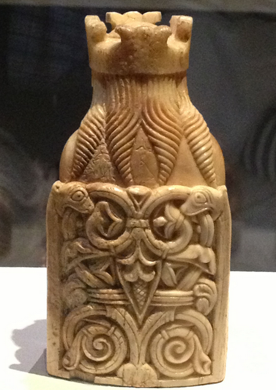
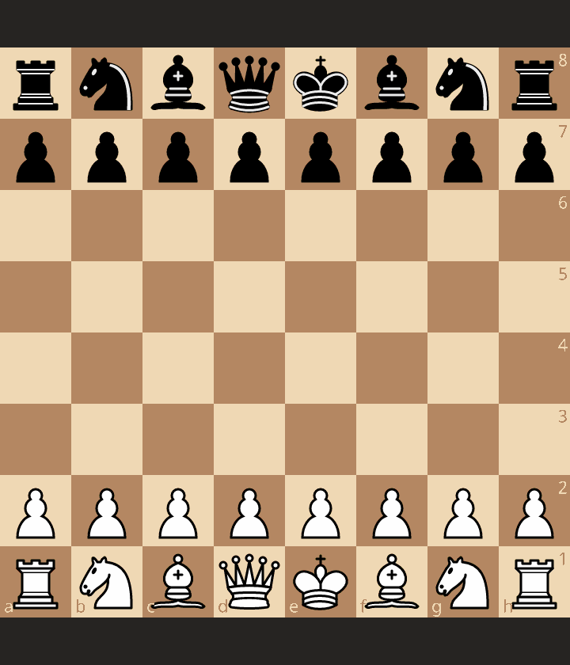
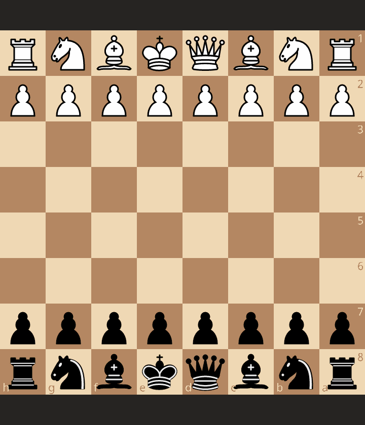
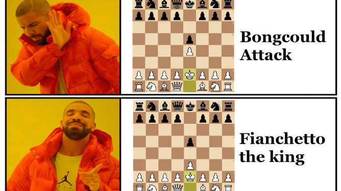

The Chess Chronicle
is your gateway to the fascinating world of chess.
Whether you're a beginner looking to improve
or an experienced player seeking inspiration,
Let's checkmate together!
Chess Chronicle
is your gateway to the fascinating world of chess.
Whether you're a beginner looking to improve
or an experienced player seeking inspiration,
Let's checkmate together!


The most important piece
in the game of chess.

masterpiece of chess that showcases Paul Morphy's genius

This is known as the fastest checkmate in chess.

The only opening backed by theory
Chess can develope your brain The files aren't called lanes When you blunder, you always feel pain Remember to always train-1Alfonso4
The Chess Chronicle your one stop source for all things about chess